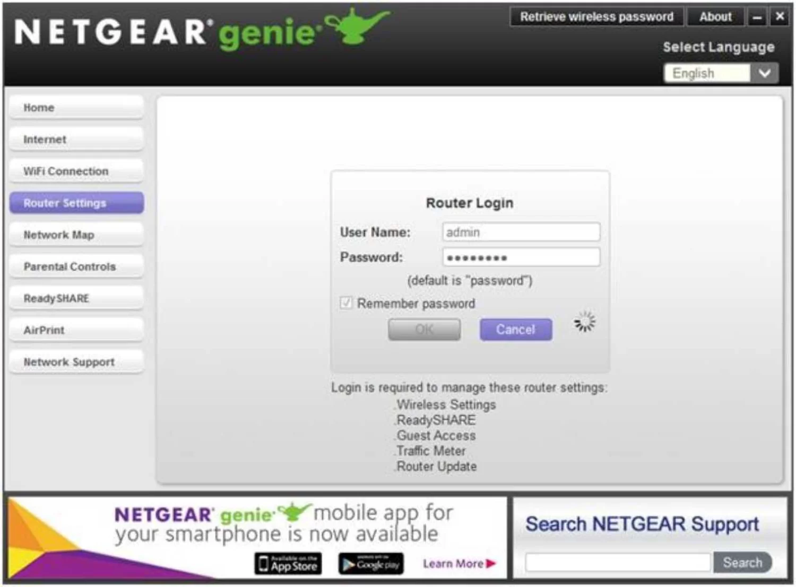

不正アクセスを受ける可能性
無断で印刷される恐れ
対策
"ルーターのマニュアルに従って「ポート変換」＊の設定を確認し、[port番号]の設定をオフにしてください。
＊メーカにより呼び方が異なり、「ポートフォワーディング」「ポートマッピング」「静的NAT」などと呼ばれることもあります。詳しくはこちら。
攻撃者が遠隔印刷機能を悪用し、意図しない印刷が実行される恐れがあります。
以下の調査にご協力をお願いします
Q.
機器の種類、メーカー、型番等をわかる範囲で教えてください
ルータ・コンピュータ・IoT機器を無断で操作される恐れ
対策
コンピューターの遠隔操作機能がインターネットに公開されている場合と、ルータの機能が公開されている場合で対処方法が異なります。両方の設定をご確認ください。
・コンピューターの遠隔操作機能が有効になっている場合は、ルーターのマニュアルに従って「ポート変換」＊の設定を確認し、[port番号]の設定をオフにしてください。
・ルーターの遠隔操作機能(SSH)が有効になっている場合は、ルーターのマニュアルに従って遠隔操作機能(SSH)を無効にしてください。
＊メーカにより呼び方が異なり、「ポートフォワーディング」「ポートマッピング」「静的NAT」などと呼ばれることもあります。詳しくはこちら。
コンピューターやIoT機器の遠隔操作機能(SSH)が動作しています。SSHの認証突破を試みる攻撃が報告されており、不正アクセスを受ける恐れがあります。対策が必要です。
以下の調査にご協力をお願いします
Q.
機器に心当たりがあれば、機器の種類、メーカー、型番等をわかる範囲で教えてください
誰でも以下のWeb画面にアクセスできる

対策
"ルーターの設定画面の場合、機器のマニュアルに従って管理画面のインターネットへの公開を停止してください。自宅内の機器の画面の場合、ルーターのマニュアルに従って「ポート変換」＊のの設定を確認し、[port番号]の設定をオフにしてください。
＊メーカにより呼び方が異なり、「ポートフォワーディング」「ポートマッピング」「静的NAT」などと呼ばれることもあります。詳しくはこちら。
Web画面がインターネットに公開されています。不正アクセスを受けたりマルウェア感染する恐れがあります。対策が必要です。
以下の調査にご協力をお願いします
Q.
機器の種類、メーカー、型番等をわかる範囲で教えてください
大学にサポートを依頼する
マルウェア感染や脆弱性への対応について大学のサポートを希望する方はこちらのフォームよりご連絡ください。後日大学よりメールをお送りさせていただきます。